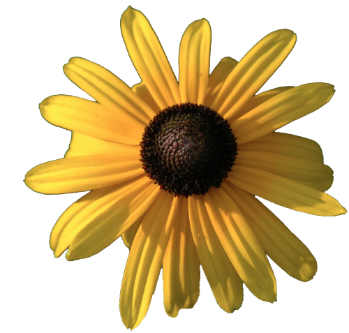
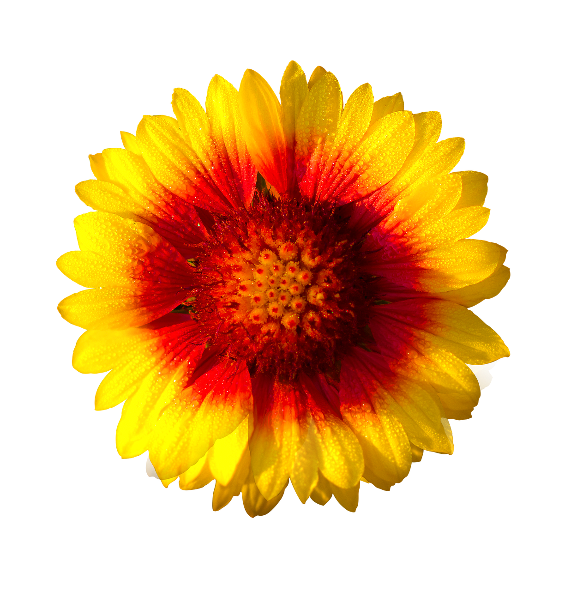
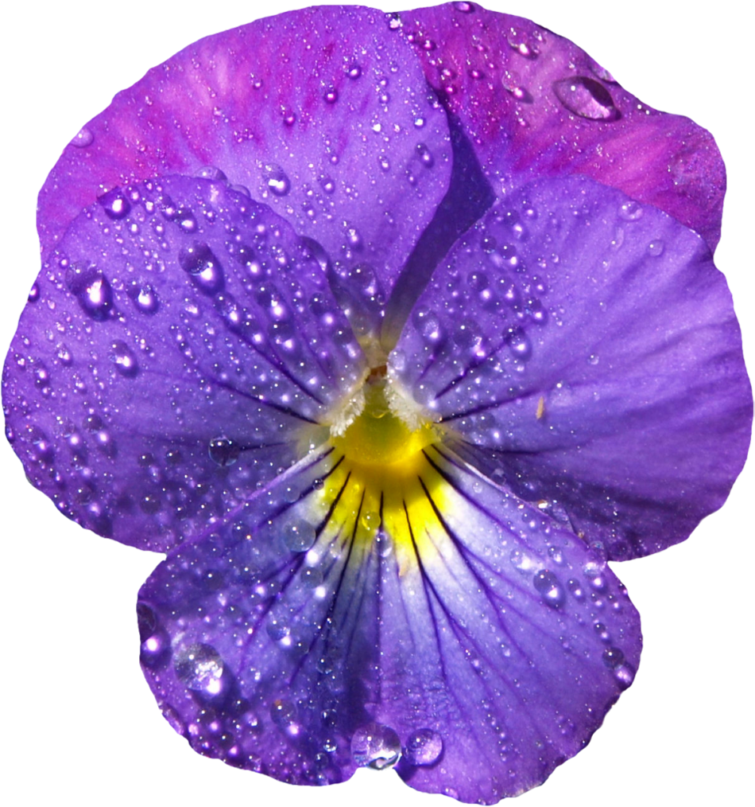
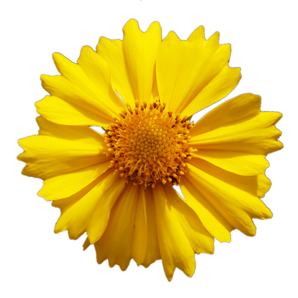
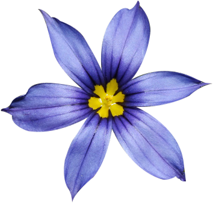
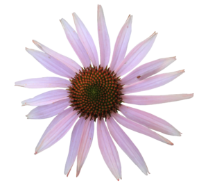
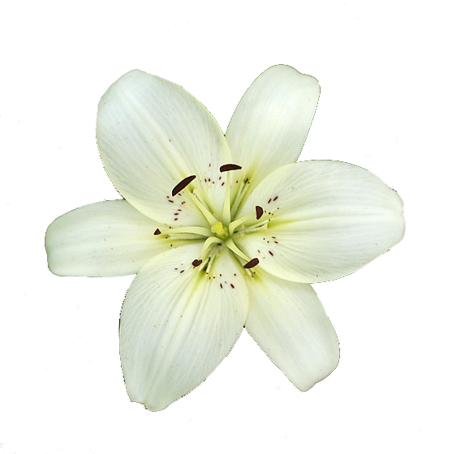
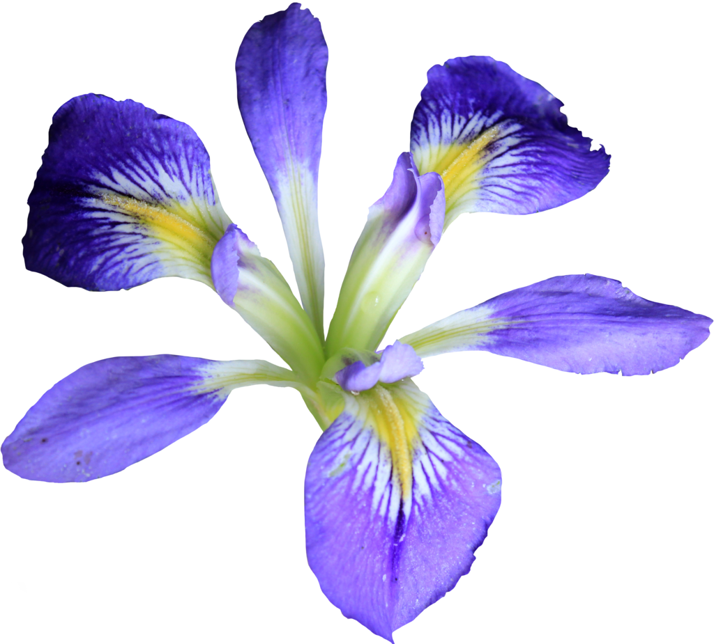

Black-eyed Susanmore_vert
Black-eyed Susanclose
This native perennial flower can range from yellow to reddish-orange in color and does well in medium drought. It is an incredibly common flower found throughout the state of Florida as it is durable and easy to grow.
- Optimal Light: FULL
- Soil Texture: ANY
- Soil Moisture: LOW
- Height: 2-3 ft.
- Attracts: Birds/Butterflies

Blanket Flowermore_vert
Blanket Flowerclose
This native perennial flower comes in a yellow/red color and does well in high drought. It is popular in floral arrangements.
- Optimal Light: FULL
- Soil Texture: Sandy or Loam
- Soil Moisture: LOW
- Height: 1-2 ft.
- Attracts: Butterflies

Violetmore_vert
Violetclose
This native perennial flower comes in a range of purple/yellow/white colors and does well in low drought. The common blue violet can be found on forest floors in Northern Florida, with the native Bog white violet being found in marshes and ponds.
- Optimal Light: FULL
- Soil Texture: Sandy or Loam
- Soil Moisture: MEDIUM
- Height: .5-1 ft.
- Attracts: N/A

Tickseedmore_vert
Tickseedclose
This native perennial flower comes in a sunny yellow color, surrounding either a black or yellow center, and does well in high drought. Also known by the name "Coreopsis", the Tickseed is Florida's state wildflower.
- Optimal Light: FULL
- Soil Texture: ANY
- Soil Moisture: LOW
- Height: 1-4 ft.
- Attracts: Birds/Butterflies

Blue-eyed Grassmore_vert
Blue-eyed Grassclose
This native perennial flower comes in a blue color and does well in medium drought. It is a member of the iris family and can be found throughout the state of Florida.
- Optimal Light: FULL
- Soil Texture: ANY
- Soil Moisture: MEDIUM
- Height: .5-1.5 ft.
- Attracts: N/A

Purple Coneflowermore_vert
Purple Coneflowerclose
This native perennial flower comes in a light purple color and does well in high drought. Non-natives come in an array of colors and behave as annual flowers, so be sure to plant the true Florida native seeds.
- Optimal Light: PARTIAL
- Soil Texture: This rare flower needs soil that drains well.
- Soil Moisture: LOW
- Height: 1-3 ft.
- Attracts: Birds/Butterflies

Rain Lillymore_vert
Rain Lillyclose
This native perennial flower comes in a range of white/yellow/pink colors and does well in medium drought. Also known as a "Zephyr Lilly", the adaptable Rain Lilly gets its name from blooming after a rain shower.
- Optimal Light: FULL
- Soil Texture: ANY
- Soil Moisture: LOW
- Height: 4-8 in.
- Attracts: N/A

Blue Flag Irismore_vert
Blue Flag Irisclose
This native perennial flower comes in a lavender/purple color and does well in medium drought. It thrives in wet conditions and is commonly found along ponds, streams, and marshy areas throughout the state of Florida.
- Optimal Light: PARTIAL
- Soil Texture: ANY
- Soil Moisture: HIGH
- Height: 4-7 ft.
- Attracts: N/A